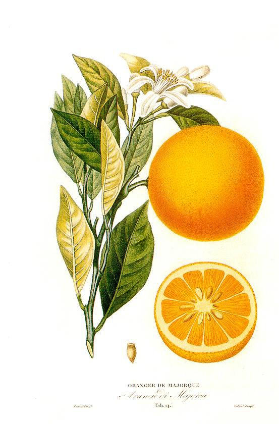
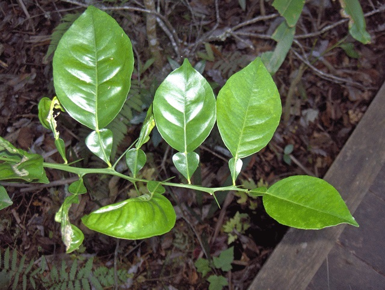
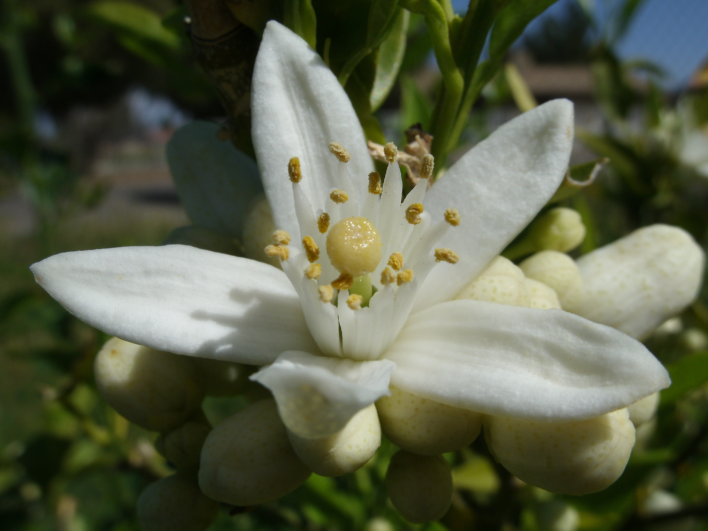
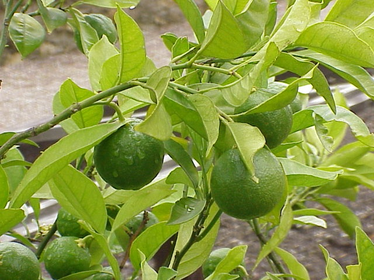
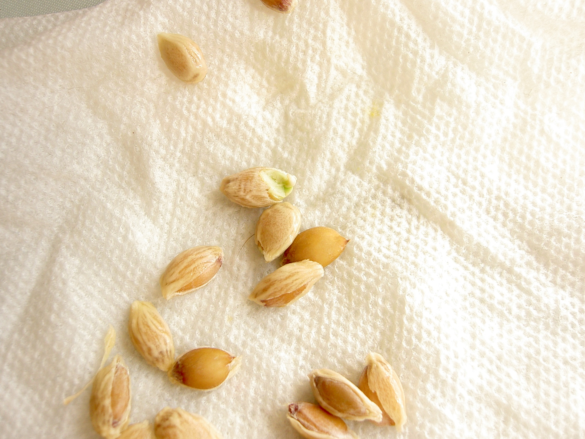

| Ссылки |
Апельси́н (лат. Citrus sinensis) — плодовое дерево; вид рода Цитрус семейства Рутовые; а также плод этого дерева.
Гибрид, возможно, мандарина (Citrus reticulata) и помело (Citrus maxima)[1].
Растение культивировалось в Китае ещё за 2,5 тысячи лет до н. э.
В Европу было привезено португальскими мореплавателями.
После этого быстро распространилась мода на выращивание апельсиновых деревьев;
для этого стали строить специальные стеклянные сооружения, названные оранжереями (от фр. orange апельсин).
Апельсиновые деревья растут по всему побережью Средиземного моря (а также в Центральной Америке)
[2].
Слово «апельсин» заимствовано из голландского (нидерландского) языка; нидерл. appelsien
(ныне чаще употребляется форма sinaasappel),
равно как и нем. Apfelsine, есть калька с фр. pomme de Chine
(буквально — «яблоко из Китая»; теперь это название во французском вытеснено словом
orange)[3].
Ботаническое описание

Довольно высокое дерево, относится к трибе Цитрусовые (Citreae)
подсемейства Померанцевые (Aurantioideae)
семейства Рутовые (Rutaceae)[4].
Цельные многолетние листья апельсина соединяются со своими крылатыми черешками посредством промежуточного широкого сочленения.
Белые цветки сидят по шесть, кистями и состоят из пятираздельного малораскрывающегося околоцветника с толстыми долями,
множества тычинок и одиночной свободной, или «верхней», завязью (известные «fleurs d’orange»).
Формула цветка:
✱K5 C5 A∞ G∞[5].
Плод — многогнёздный,
многосемянный, с толстой двуслойной кожурой.
Мякоть состоит из множества соковых мешочков — веретеновидных, заполненных соком волосков
(по своему происхождению соковые мешочки представляют собой выросты внутренней эпидермы
плодолистиков).
Плод такого устройства, который происходит из верхней завязи и характерен также и для других представителей рода Цитрус (лимон, померанец и др.),
называется «гесперидий»; это — весьма своеобразная разновидность ягодообразного плода.
У апельсина мякоть легко разделяется на доли, являющиеся гнёздами плода; каждая содержит одно или два семени,
расположенных одно над другим[6].
Наружный слой гесперидия апельсина, называемый из-за жёлто-оранжевой окраски зрелых плодов флаведо (от лат. flavus — жёлтый),
содержит большое количество крупных просвечивающих шаровидных желёзок, содержащих эфирное масло.
Внутренний слой из-за белой губчатой структуры у зрелых плодов называется альбедо (от лат. albus — белый);
у апельсина альбедо рыхлое, так что мякоть легко отделяется от кожуры. Сорта так называемых пупочных апельсинов обладают интересной аномалией гесперидия:
гинецей у них образует два ряда плодолистиков, в результате чего развиваются два плода, причём один из них рудиментарен и находится у верхушки второго,
большего плода; этот маленький плод можно видеть через небольшое отверстие («пупок») в кожуре большого плода[7].
По вкусовым качествам всего более ценятся тонкокожие, сочные и полновесные апельсины мальтийские, генуэзские, малагские и сицилийские, или мессинские.
Отдельные деревья имеют большую — как у
дуба — крону и живут до 100—150 лет;
в урожайный год они способны дать до 38 000 плодов[2]




Примечания
1. ↑ Об условности указания класса двудольных в качестве вышестоящего таксона для описываемой в данной статье группы растений
см. раздел «Системы APG» статьи «Двудольные».
2. ↑ Nicolosi, E. et al. Citrus phylogeny and genetic origin of important species as investigated by molecular markers //
Theoretical and Applied Genetics. — 2000. — № 100 (8). — P. 1155—1166. — DOI:10.1007/s001220051419..
3. Ивченко, С. И. Загадки цинхоны. — М.: Молодая гвардия, 1965. — С. 127—128. — 208 с.
4.↑ Цыганенко, Г. П. Этимологический словарь русского языка. — 2-е изд. — Киев: Радянська школа, 1989. — С. 18. — 511 с. — ISBN 5-330-00735-6.
5. Grant, M., Blackmore, S., Morton, C. Pollen morphology of the subfamily Aurantioideae (Rutaceae) // Grana. — 2000. — № 39 (1). — P. 8—20. — DOI:10.1080/00173130150503768..
|
ЗДЕСЬ может быть ВАША РЕКЛАМА |
.gif?uselang=ru){kind=link}
{kind=link}
{kind=link}
{kind=link}